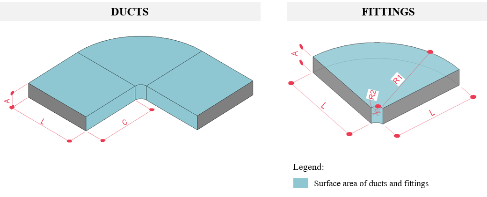

These elements should be measured by the surface area, in square meters or feet (as illustrated in Figure 16) in any project phase.
 Figure 16 - Illustration of the quantified surface area of ducts and fittings.
There are BIM authoring tools that natively provide this area for ducts; however, in cases where this information is not natively available (such as for duct fittings), new parameters must be introduced to calculate and report these areas.
Special Case (Insulation/Fire Protection): It is necessary to consider these as a distinct typology from regular ducts. Any specific characteristics in the composition of these elements should result in a new element type/class, enabling more accurate and detailed quantity takeoff.